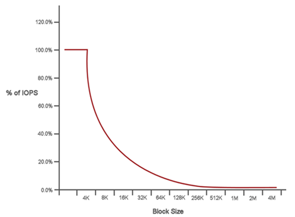

パフォーマンスと QoS
SolidFire ストレージクラスタでは、サービス品質（ QoS ）パラメータをボリューム単位で指定できます。QoS を定義する 3 つの設定可能なパラメータである Min IOPS 、 Max IOPS 、および Burst IOPS を使用して、 IOPS （ 1 秒あたりの入出力）で測定されるクラスタパフォーマンスを保証することができます。
| SolidFire Active IQ には、最適な設定と QoS 設定に関するアドバイスを提供する QoS 推奨ページがあります。 |
QoS パラメータ
IOPS パラメータは、次のように定義します。
-
* 最小 IOPS * - ストレージクラスタがボリュームに提供する平常時の最小 IOPS 。ボリュームに設定された Min IOPS は、そのボリュームに対して最低限保証されるパフォーマンスレベルです。パフォーマンスがこのレベルを下回ることはありません。
-
* 最大 IOPS * - ストレージクラスタがボリュームに提供する平常時の最大 IOPS 。クラスタの IOPS レベルが非常に高い場合も、 IOPS パフォーマンスはこのレベル以下に抑えられます。
-
* Burst IOPS * - 短時間のバースト時に許容される最大 IOPS 。ボリュームが Max IOPS 未満で動作している間は、バーストクレジットが蓄積されます。パフォーマンスレベルが非常に高くなって最大レベルに達した場合、ボリュームで IOPS の短時間のバーストが許容されます。
Element ソフトウェアでは、 IOPS 使用率が低い状態でクラスタが稼働しているときに Burst IOPS が使用されます。
個々のボリュームは、蓄積したバーストクレジットを使用して、一定の「バースト期間」中は Max IOPS を最大で Burst IOPS レベルまで一時的に超過することができます。 ボリュームのバースト時間は最大で 60 秒です。クラスタの容量にバーストに対応できるだけの余力があることが条件になります。ボリュームは、 Max IOPS 未満で動作している 1 秒ごとに、 1 秒分のバーストクレジットを蓄積します（最大 60 秒）。
Burst IOPS には 2 つの制限があります。
-
ボリュームは、蓄積したバーストクレジット数と同じ秒数だけ Max IOPS を超過できます。
-
ボリュームが Max IOPS の設定を超えた場合は、 Burst IOPS の設定によって制限されます。つまり、バースト時の IOPS がボリュームの Burst IOPS の設定を超えることはありません。
-
-
* Effective Max Bandwidth * - 最大帯域幅は、（ QoS 曲線に基づく） IOPS に IO サイズを掛けて計算されます。
例： QoS パラメータを Min IOPS = 100 、 Max IOPS = 1000 、 Burst IOPS = 1500 に設定した場合、パフォーマンスの品質は次のようになります。
-
各ワークロードは、クラスタで IOPS に対するワークロードの競合が発生するまでは、最大で 1000 IOPS を持続的に使用することができます。競合が発生すると、すべてのボリュームの IOPS が指定の QoS 範囲内に戻ってパフォーマンスの競合が解消されるまで、 IOPS が少しずつ引き下げられます。
-
すべてのボリュームのパフォーマンスは、最大で Min IOPS の 100 まで引き下げられます。Min IOPS である 100 を下回ることはなく、ワークロードの競合が解消されれば 100 IOPS よりも高いレベルにとどまることが可能です。
-
パフォーマンスは長期間にわたって 1000 IOPS を超えることも、 100 IOPS を下回ることもありません。1500 IOPS （ Burst IOPS ）のパフォーマンスは、 Max IOPS 未満で動作することでバーストクレジットを蓄積したボリュームに対して短時間の間のみ許容されます。バーストレベルが持続することはありません。
-
QoS 値の制限
QoS の最小値と最大値を次に示します。
| パラメータ | 最小値 | デフォルト | 4KB × 4 | 5 8 KB | 6 、 16KB です | 262KB |
|---|---|---|---|---|---|---|
最小 IOPS |
50 |
50 |
15,000 |
9 、 375 * |
5556 * |
385 * |
最大 IOPS |
100 |
15,000 |
200,000 ** |
125,000 |
74,074 |
5128 |
バースト IOPS |
100 |
15,000 |
200,000 ** |
125,000 |
74.074 |
5128 |
-
これらは概算値です。** 最大 IOPS とバースト IOPS は最大 200 、 000 に設定できます。ただし、この設定は、ボリュームのパフォーマンスの制限を意図的に解放する場合にのみ使用できます。実際のボリュームの最大パフォーマンスは、クラスタの使用率とノードごとのパフォーマンスによって制限されます。
QoS パフォーマンス
QoS パフォーマンス曲線は、ブロックサイズと IOPS の割合の関係を示しています。
アプリケーションが取得できる IOPS には、ブロックサイズと帯域幅が直接影響します。Element ソフトウェアは、ブロックサイズを 4k に正規化することで受信したブロックサイズを考慮します。システムは、ワークロードに応じてブロックサイズを増やすことがあります。ブロックサイズが大きくなると、システムはそのブロックサイズを処理するために必要なレベルまで帯域幅を増やします。帯域幅が増えると、システムが処理可能な IOPS は減少します。
QoS パフォーマンス曲線は、ブロックサイズの増大と IOPS の割合の減少の関係を示しています。

たとえば、ブロックサイズが 4k で帯域幅が 4000KBps であれば、 IOPS は 1000 です。ブロックサイズが 8k に増え、帯域幅が 5000KBps に増えると、 IOPS は 625 まで減少します。ブロックサイズを考慮することで、バックアップやハイパーバイザーアクティビティなど、より大きなブロックサイズを使用する優先度の低いワークロードは、より小さいブロックサイズを使用する優先度の高いトラフィックに必要なパフォーマンスをあまり消費しません。
QoS ポリシー
標準的な QoS 設定を QoS ポリシーとして作成および保存して、複数のボリュームに適用することができます。
QoS ポリシーは、データベースサーバ、アプリケーションサーバ、インフラサーバなど、ほとんどリブートされずにストレージへの常時アクセスが必要となるサービス環境に最適です。個々のボリュームの QoS は、仮想デスクトップや専用キオスクタイプの VM など、 1 日に何回か再起動、電源投入、電源オフなどの軽用途の VM に最適です。
QoS ポリシーと QoS ポリシーを一緒に使用しないでください。QoS ポリシーを使用している場合は、ボリュームでカスタム QoS を使用しないでください。カスタム QoS は、ボリュームの QoS 設定に対して QoS ポリシーの値を上書きして調整します。
| QoS ポリシーを使用するには、 Element 10.0 以降のクラスタを選択する必要があります。 10.0 より前のクラスタでは QoS ポリシーを使用できません。 |
 GitHub で編集
GitHub で編集